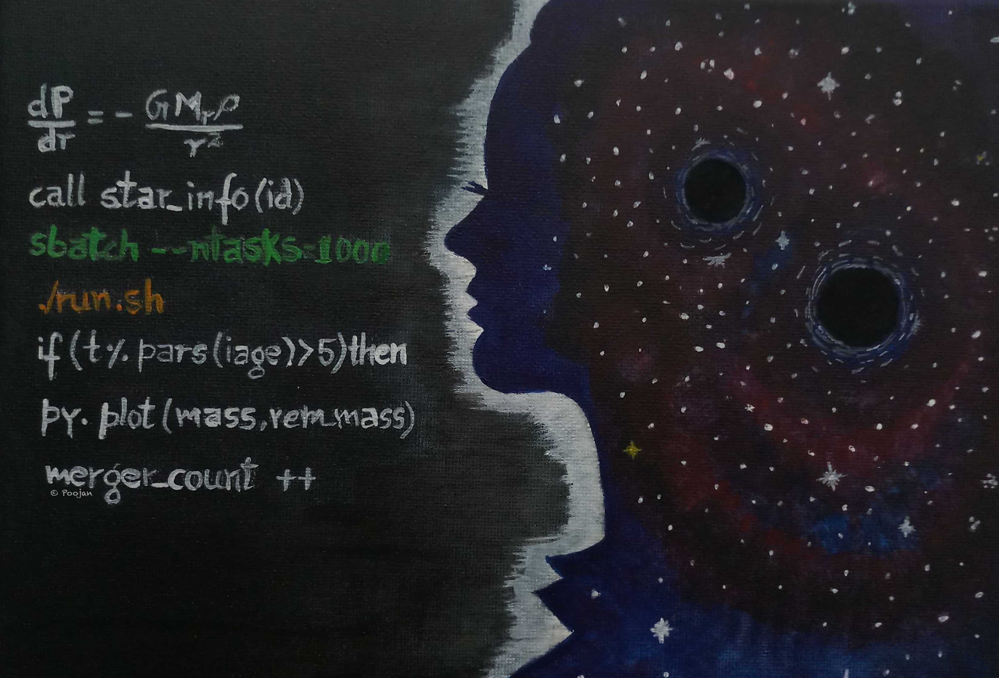
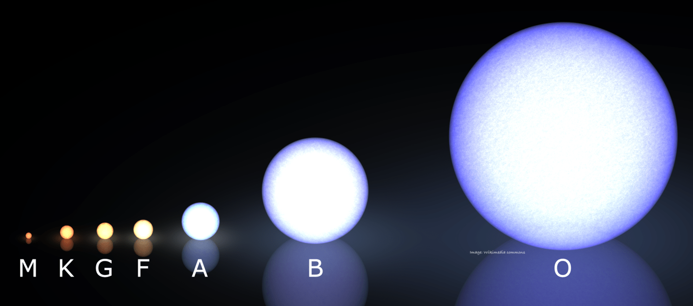

My research focuses on simulating the lives of the stars using a combination of detailed and population synthesis modelling techniques. To this end, I have developed a new tool, ‘METISSE’, which allows direct integration of sets of stellar models computed using detailed codes with existing population synthesis codes.

METhod of Interpolation for Single Star Evolution
Interpolation is a method for estimating properties of an object using that of other related objects. It is a powerful mathematical technique and has wide-ranging applications from something as simple as fitting curve a set of data to predicting fluctuations of the stock-markets. In METISSE, we interpolate between the stellar data computed with detailed codes like MESA to estimate the parameters of a star using that of neighbouring mass stars with similar properties. By using this with codes that can simulate the evolution of stellar populations, we can better understand the dynamics and chemical composition of the stellar systems.
The article describing METISSE and its capabilities has been published in the Monthy Notices of Royal Astronomical Society and can be accessed at ArXiv . The publication was also covered by a number of media, including a beautifully written article by Dan Lambeth for Space Australia as well as this release from OzGrav.

1-D stellar structure and evolution
In my PhD, I am trying to understand the role of individual stars in the evolution of star clusters and galaxies. I study how evolution of individual stars affects the properties binaries or cluster systems, with a special emphasis on the evolution of massive stars. I make use of 1-D stellar structure and evolution code MESA to simulate massive stellar evolution. I am also involved in research project with Bonn Evolutionary Code.
The goal is to examine the role massive stars play in the evolution of stellar systems such as globular clusters and galaxies as well as understand the origin of events such as gravitational waves from compact binary mergers. These massive stars are precursors of many vivid and energetic phenomenon in the universe. However, their complex and short lives make it difficult to accurately predict their properties. But because of uncertainties in their evolution, computer programs that model the lives of such stars in detail often have to resort to various approximations. These approximations can have effects both on the lives and the predictions of final properties of stars.

Stellar Populations
Simulating stellar interactions for tens of thousands of stars is computationally expensive both in memory and time.
This is useful for simulating large systems of stars while also taking into account different kinds of interactions between them like interaction in a binary system or gravitational interaction in dense star clusters.The design of METISSE and the use of interpolation in it gives it an edge as it can make use of different sets of stellar models for predicting the properties of stars. This is especially important for predicting properties of systems involving stars more massive than 9 times the mass of our sun.
I am also a part of the team COMPAS , a rapid binary population synthesis code .

Stellar Magnetism
Selected publications
The fates of massive stars: exploring uncertainties in stellar evolution with METISSE, P. Agrawal, J. Hurley, S. Stevenson, D. Szécsi, C. Flynn MNRAS,497,4549
`Bonn' Optimized Stellar Tracks (BoOST).Simulated populations of massive and very massive stars as input for astrophysical applications; D. Szécsi, R. Wünsch, P. Agrawal, N. Langer arXiv:2004.08203
Neutron Star Extreme Matter Observatory: A kilohertz-band gravitational-wave detector in the global network; Ackley et al. including P. Agrawal arXiv:2007.03128, accepted in PASA